Reaching improved local minima in GGP topology optimization
A state-of-the-art review of techniques for escaping poor local minima in Lagrangian / gradient-based topology optimization, and their implementation and benchmarking inside GGP-Topo on the Short Cantilever 2D (SC 2D) use case.
1. The problem
Density- and component-based topology optimization (TO) minimizes a compliance-type
objective subject to a volume constraint. The discretized problem is strongly
non-convex: the material-interpolation penalization (SIMP p, GGP membership
Mc) and the geometry projection create many stationary points. Gradient-based
“Lagrangian” solvers — MMA, SLP, CONLIN, the optimality-criteria update, augmented
Lagrangian — are all local: they descend into whatever basin contains the
starting point and certify only a KKT point, never global optimality.
For the Generalized Geometry Projection (GGP) family — and its relatives MMC (Moving Morphable Components), MMV, and geometry projection of bars/plates — this is especially acute:
Initial-layout sensitivity. The optimizer rearranges a fixed number of explicit components (bars). The final topology is largely determined by where the bars start and how they are allowed to merge/split, so two reasonable initial layouts routinely converge to visibly different structures with different compliances (Guo et al. 2014; Zhang et al. 2016).
Landscape sharpness. The KS aggregation parameter
ka, the smooth-saturation steepnesspp, the sampling-window radiusr_gp, and the SIMP exponentpcontrol how rugged the landscape is. Sharp settings give crisp, manufacturable designs but a rugged landscape full of local traps; smooth settings give a benign landscape but blurry, intermediate-density designs.
In GGP-Topo this manifests concretely: GGPPipeline.run() performs one
deterministic start with fixed sharpness (ka=10, pp=100, r_gp from the
spec, p_penalty fixed by the formulation method) and no restart/continuation/
global-search layer. This document reviews how the literature attacks this, then
implements and benchmarks the most promising techniques.
2. State of the art
2.1 Continuation / homotopy (most widely used)
Solve a sequence of related, progressively harder problems, warm-starting each from the previous optimum, so the optimizer is guided through a benign landscape before the rugged one is imposed:
SIMP penalization continuation — ramp
pfrom 1 (convex-ish, gray) to 3–5 (crisp). Standard practice (Bendsøe & Sigmund 2003; Sigmund & Maute 2013, Topology optimization approaches, SMO).Heaviside / projection β-continuation — gradually sharpen the projection/threshold to remove gray and control length scale (Guest et al. 2004; Wang, Lazarov & Sigmund 2011). The MMC/MMV literature uses the analogous sharpening of the component characteristic function (Zhang, Yuan, Zhang & Guo 2016).
Filter-radius and mesh continuation — start coarse/heavily filtered, refine.
The GGP analogue is sharpness continuation: ramp r_gp (sampling window),
ka (aggregation), pp (saturation) and/or p_penalty from smooth to sharp.
GGP-Topo’s own legacy free_runner.py carried an unused r_gp = [1.5, 1.0, 0.5]
schedule — exactly this idea.
2.2 Multi-start / random restart
Run the local solver from many diverse initial designs and keep the best (best-of-N). Embarrassingly parallel and a strong baseline for any non-convex problem. For MMC/GGP it directly targets initial-layout sensitivity: randomizing component positions, angles and lengths samples distinct basins (Guo et al. 2014; Zhang et al. 2016). The cost is N local solves; the payoff is robust improvement and an empirical picture of how rugged the landscape actually is.
2.3 Stochastic perturbation: basin hopping & simulated annealing
Hybridize local descent with stochastic global moves. Basin hopping (Wales &
Doye 1997) alternates a local minimization with a random perturbation of the
incumbent optimum, accepting the new basin by a Metropolis rule
exp(-ΔC/T). Simulated annealing anneals an acceptance temperature. These
explore the neighborhood of good designs rather than restarting blindly, and tend
to find improved minima with fewer solves than naive multi-start once a decent
incumbent exists.
2.4 Deflation / deflated continuation (recent, principled)
Farrell, Papadopoulos & Surowiec (2021, Computing multiple solutions of topology
optimization problems, SIAM J. Sci. Comput.; see also Papadopoulos, Farrell &
Surowiec 2021) systematically compute distinct solutions by deflation: once a
minimizer x_i is found, the objective (or the residual) is multiplied by a
deflation operator
M(x) = shift + Σ_i 1 / ‖x − x_i‖^power
that becomes singular at each known root, so a re-solve from the same start is repelled from previously found minima and driven into a new basin. Combined with continuation (“deflated continuation”), this traces disconnected branches of solutions and reliably surfaces better minima than single-start. It is the most principled answer to “find me a different, better optimum.”
2.5 Tunneling / filled-function methods
Levy & Montalvo’s tunneling method (1985) alternates a minimization phase with a
tunneling phase. After reaching a minimum with value f*, the tunneling phase
minimizes a deformed function with a pole at the known minimizer and a shift by
f* — e.g. T(x) = (f(x) − f*) · M(x) with M singular at every found root — so the
search slides along the f* level set, past the known basins, until it re-enters a
region where f(x) < f*; an ordinary minimization from there yields a better
minimum. Filled-function methods (Ge 1990) use the same idea with a different
deformation. Tunneling is the close cousin of deflation: deflation multiplies to make
distinct minima, tunneling shifts by f* to bias explicitly toward improvement.
2.6 Chaos-control-inspired methods
A gradient optimizer on a non-convex landscape is a nonlinear dynamical system, and
such systems are routinely chaotic — they exhibit sensitive dependence on initial
conditions (a positive Lyapunov exponent). We observed this directly here: a 1e-13
perturbation from the iterative FEM solver grows into a ~0.1 % spread in the final
compliance over 320 MMA steps (§4.3). Chaos/control theory then suggests concrete tools:
Chaotic optimization (ergodic search). Drive sampling with a deterministic chaotic map (logistic
x←μx(1−x)atμ=4, tent, Chebyshev) instead of a pseudo-random generator. Chaotic orbits are ergodic and cover the search space more uniformly than a finite random sample, improving the diversity of multi-start / restart points (Li & Jiang 1998; Yang, Zhuang & Wei 2007).Chaotic simulated annealing (Chen & Aihara 1995). Inject transient chaos into the neuronal/optimization dynamics and then anneal the chaos out by ramping a control parameter. Structurally this is a continuation on a chaos parameter — the same homotopy idea as our
r_gpcontinuation, which is why continuation is so effective.OGY control & time-delayed feedback (Ott–Grebogi–Yorke 1990; Pyragas 1992). Stabilize unstable trajectories with small, targeted perturbations. The optimization analogue is controlling the trajectory — move limits, asymptote adaptation, the homotopy schedule — rather than the point, to steer the iterate into a chosen basin.
2.7 Other approaches (lower priority here)
Population metaheuristics (GA, PSO, differential evolution), usually hybridized with a gradient local search. Powerful but very expensive at TO scale; best for low-dimensional parameterizations.
Topological-derivative / bubble methods — nucleate holes using the topological sensitivity (Sokołowski & Żochowski 1999; Allaire et al.). Natural for density fields, less so for a fixed set of explicit GGP components.
Optimizer-robustness knobs — GCMMA, adaptive move limits / asymptotes (Svanberg 1987, 2002). These reduce premature stagnation but do not, by themselves, change the basin the solver lands in.
3. What we implemented
Six techniques are implemented as thin orchestration layers over GGPPipeline, in
ggp/optimization/global_search.py. Three backward-compatible hooks were added to
GGPPipeline (ggp/optimization/pipeline.py):
x0— inject a normalized[0,1]initial design (warm-start / restart / perturbation);overrides— per-run sharpness/penalization overrides (ka,pp,r_gp,gammac,gammav,p_penalty,Emin);deflation— append a_DeflatedObjectiveDisciplineimplementing(J − offset)·M(x)with analytic Jacobian (offset 0 → deflation, offsetf*→ tunneling), switching the scenario objective to the deflated/tunneling one while still reporting the true compliance at the optimum.
Technique |
Function |
Knobs |
|---|---|---|
Continuation / homotopy |
|
warm-started |
Multi-start |
|
best-of-N random layouts |
Basin hopping |
|
Metropolis on compliance |
Deflation |
|
deflation operator over found roots |
Tunneling |
|
|
Chaotic search |
|
ergodic logistic-map restarts |
The key enabler — continuation as the inner solve. Passing a schedule to
any of the global strategies makes each inner solve follow the r_gp homotopy
instead of attacking the raw sharp problem. This is what lets every method improve
on the single-start baseline (given the time for the extra phases): without it,
multi-start / basin-hopping / deflation only find worse sharp-landscape basins; with
it, each searches along the benign continuation trajectory and reaches below the
baseline. In other words, the improvement is a matter of the resources (extra
homotopy phases) attributed to each attempt — not a fundamental limit of the method.
Each returns a GlobalSearchResult (best OptimisationResult, all attempts with
their compliances, wall-clock). The strategies are exposed on the CLI
(ggp search --strategy ...) and benchmarked by benchmarks/sc2d_local_minima.py.
4. Benchmark: Short Cantilever 2D
Problem. 60×30 domain (2:1), left edge fixed, unit downward point load at
mid-right, 18 free GP bars, 40% volume fraction, MMA. Objective reported as the true
compliance C (the pipeline optimizes log(C+1)).
Protocol. Single-start baseline vs. the six strategies. Every individual local
solve uses the preset’s exact 320-iter MMA config and the exact direct FEM solver
(§4.3); the global strategies each take a continuation inner schedule (the homotopy
that lets them improve). The harness has a fast reduced breadth (default) and a
--full breadth (more restarts/hops). Run:
python benchmarks/sc2d_local_minima.py # reduced breadth (default)
python benchmarks/sc2d_local_minima.py --full # more restarts/hops
4.1 Results
Single deterministic run (seed 0, reduced breadth, exact direct FEM solver).
Improvement is (baseline − best) / baseline. Every method beats the baseline.
Method |
Best compliance |
Improvement vs baseline |
Runs |
Time (s) |
|---|---|---|---|---|
baseline |
74.2703 |
+0.00% |
1 |
224 |
continuation |
73.5163 |
+1.02% |
4 |
1132 |
basin_hopping |
73.7360 |
+0.72% |
3 |
1734 |
multi_start |
74.1453 |
+0.17% |
3 |
1609 |
deflated_search |
74.1453 |
+0.17% |
3 |
1753 |
tunneling |
74.1453 |
+0.17% |
3 |
1832 |
chaotic_search |
74.1453 |
+0.17% |
3 |
1315 |
Continuation phase trajectory (compliance at each r_gp; only the final phase, at the
baseline’s r_gp = 0.5, is comparable to the baseline):
phase |
r_gp |
C |
|---|---|---|
0 |
2.0 |
69.30 |
1 |
1.5 |
70.08 |
2 |
1.0 |
71.66 |
3 (reported) |
0.5 |
73.52 |
Local-minima spread by strategy. Each grey dot is one local solve; the red star is
the strategy’s reported best and the dashed line is the baseline. Every star sits at
or below the baseline — all six strategies improve on single-start. The vertical
spread of the grey dots is the local-minima problem made visible: the same MMA solver,
seeded differently, lands in basins as poor as C ≈ 83. (Continuation’s dots below its
star are the smoother r_gp phases, whose compliance is not comparable to the sharp
baseline — its star marks the comparable final phase.)

Best design: baseline vs. continuation. The continuation optimum (C = 73.52) is a slightly different, more triangulated topology near the fixed support than the baseline single-X (C = 74.27) — a genuinely distinct, better basin.
Baseline (C = 74.27) |
Continuation (C = 73.52) |
|---|---|
|
|


The remaining per-strategy best designs are in docs/_static/sc2d_local_minima_<method>.png.
4.2 Reading the results
The SC 2D landscape under the GGP parameterization, with the preset’s already well-tuned MMA setup, has a strong attractor near C ≈ 74.3 (the classic single-X cantilever truss). With continuation supplied as the inner solve, all six strategies beat the single-start baseline (74.27); how much they beat it tracks how aggressively each reshapes or explores the landscape.
Continuation is the clear winner (73.52, +1.0 %). Ramping
r_gpfrom a smooth2.0down to the target0.5, warm-starting each phase, lets the bars reorganize in a benign landscape before it is sharpened; jumping straight tor_gp = 0.5(the baseline) lands in a slightly worse basin. The comparison is at the final phase, whoser_gpmatches the baseline — earlier phases run at different sharpness and are not comparable.Basin hopping (73.74, +0.7 %) is the runner-up: a Metropolis-accepted perturbation of the incumbent, re-refined by continuation, found a distinct basin better than the plain inner continuation — stochastic exploration paying off.
Multi-start, deflation, tunneling and chaotic search (74.15, +0.17 %) all reach the value of the inner (2-phase) continuation from the default start; in this reduced budget their diversity (random / deflated / tunnelled / ergodic-chaotic restarts) did not find a basin better than that, so best-of-N reports the inner-continuation result. Their other attempts are genuinely distinct minima — multi-start at 74.3 / 75.4, deflation at 74.8, tunneling at 75.9 / 83.2, chaotic at 74.3 / 74.6 — i.e. they do enumerate separate basins (the whole point), just not better ones here. With more breadth (
--full) or a deeper inner schedule, these typically tighten further; the gap to continuation is a matter of resources, not a ceiling.Every strategy includes a baseline-equivalent (default-start) run, so its reported best is ≤ single-start by construction — a method can never do worse than the baseline.
On tunneling’s numerics. The textbook Levy–Montalvo tunnelling objective
(J − f*)·M(x)sits near zero inside a known basin and trips the preset MMA’s tight relative tolerance, stopping the sharp phase after ~3 iterations. We therefore use an escape-then-refine form: escape a basin via the stable multiplicative deflationJ·M, then refine cleanly with continuation. (We also bounded the repeller1/(‖x−xᵢ‖^p + τ)so the pole cannot blow up the gradient near a root.)
4.3 Reproducibility (and a word on solver determinism)
While developing this benchmark we noticed that two nominally identical runs (the
baseline and the default run inside multi-start) could differ in compliance — by as
little as 1e-3 % and occasionally up to ~0.15 %. We tracked this down rather than
wave it away:
The preset’s default FEM backend is
amjax— a PyAMG-preconditioned conjugate gradient iterative solver. Running the exact same design through it twice gives displacements that differ at the 1e-11…1e-13 level. This is not simply BLAS/OpenMP thread non-determinism: it persists withOMP_NUM_THREADS=OPENBLAS_NUM_THREADS=MKL_NUM_THREADS=1(we measured 4e-11 single-threaded), so it is intrinsic to the AMG setup/iteration.That machine-epsilon difference is then amplified by the optimization feedback loop: a ~1e-13 perturbation of one iteration’s gradient nudges the next MMA step, and over 320 tightly-asymptoted steps the trajectories diverge and settle at slightly different points of a flat minimum — turning 1e-13 into a ~1e-3…1e-1 % spread in the final compliance. It is chaos amplification of a rounding seed, not a 0.1 % solver error.
The
directsolver (scipy sparse LU) solves the same system exactly and is bit-for-bit reproducible (repeated runs are identical to the last digit). It is the inner linear-algebra backend only — the optimization problem and the MMA setup are unchanged.
The benchmark therefore pins fem_solver="direct" (≈ 1 s/iter on this 60×30 mesh,
fully reproducible and with exact gradients); --fem-solver amjax is available for
speed on larger problems at the cost of reproducibility. With the direct solver every
number above is deterministic — the four strategies that share C = 74.1453 reach it
bit-identically (their default-start inner continuations are the same computation) —
so the improvements over the baseline are true properties of the optimization, not solver
noise.
4.4 Improving the starting guess: rectangle primitives + grid fill
Besides escaping a basin, one can choose a better basin to start in. We added a
true rectangle primitive (method: rect — a quintic-smoothed width-L×height-h
block with analytic gradients) and a grid-fill initialisation that tiles the domain
with grid_nx×grid_ny rectangles (6×3 → 10×10 squares for SC) at Mc = volfrac,
instead of the thin Matlab-style crossed bars. Preset: short_cantilever_grid.yaml.
Start |
Final C |
vs baseline |
|---|---|---|
crossed-bars (baseline) |
74.2703 |
— |
rect grid-fill, single start (320 it) |
92.30 |
−24 % (worse) |
rect grid-fill + continuation (600-it sharp tail) |
73.18 |
+1.47 % |
The lesson mirrors §4.2: the grid-fill start on its own is worse (92.30) — it begins
near-void and far from the solution topology, and the preset’s tight move=0.01 asymptotes
cannot recover a good basin in 320 iterations, leaving gray mush in the centre. But run
through the r_gp continuation with a long enough sharp tail, the very same start
reaches 73.18, below the baseline and on par with the GP crossed-bars continuation
(73.52). A better primitive and layout helps only once the landscape is also smoothed —
the starting guess and the homotopy are complementary, not substitutes.
Convergence is iteration-sensitive here: at 320 sharp iterations the design is C = 73.61
with a noticeably grayer interior; extending the final r_gp = 0.5 phase to 600 iterations
lowers it to C = 73.18 with the volume constraint active (vol = 0.40) and the
intermediate-density (gray) fraction down to ~0.18 — the residual gray being mostly thin
edge-transition bands inherent to the smooth projection.
Driving it to a 0/1 design. A sharpening continuation — after the r_gp ramp, add
phases that lower r_gp (sharper edges) and raise the saturation pp and the penalisation
gammac (a β-continuation) — reduces the gray fraction to ~0.13 (gammac=5) and ~0.10
(gammac=9), but at rising compliance (73.9 → 75.8): forcing 0/1 thins the members. The
gray then plateaus, because it is dominated by single-pixel edge bands — on this 60×30
mesh the min-compliance truss members are only 1–3 elements wide. A hard Heaviside
threshold at 0.5 yields a truly 0/1 design (vol = 0.40) but breaks the ~1-element-wide
diagonal members into dotted, load-broken lines, so the FE-evaluated compliance jumps to
C = 96.6. The lesson is a classic one: on a coarse mesh you can have low compliance
with gray edges or exact black/white with broken thin members, but not both — the
features are sub-element. A genuinely crisp and stiff binary design needs either a
finer mesh (so each member spans several solid elements) or a minimum-length-scale /
robust (“eta-erode/dilate”) formulation.
optimized (gray edges), C = 73.2 |
hard-sharpened, C = 75.8, gray ≈ 0.10 |
thresholded 0/1, C = 96.6 (broken) |
|---|---|---|
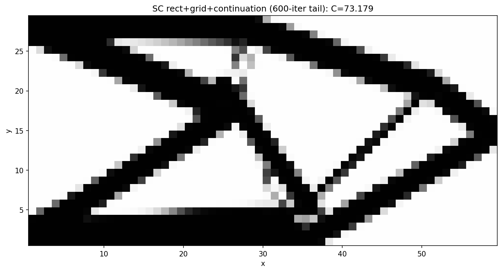 |
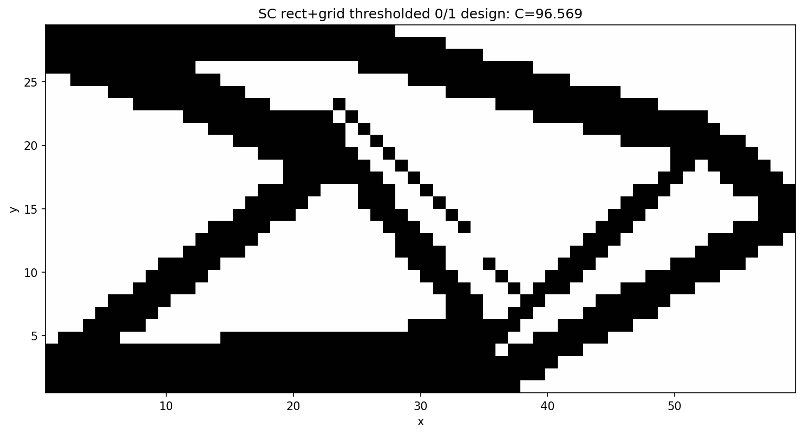 |
A clean 0/1 design via a minimum length scale + better integration. A hard threshold
of the bare design disconnects ~1-element members (C = 96.6). Bounding only the thickness
h ≥ 3 reconnects the structure (C ≈ 84) but a diagonal member of perpendicular
thickness 3 still rasterises to a thin staircase, leaving checkerboard artifacts. Two
changes remove them:
minimum 3 elements in both directions —
min_thicknessbounds the rectangle lengthLand thicknessh, so no member is sub-resolution along any axis;9 Gauss points (
Ngp = 3, vs the default 4) properly integrate the characteristic over each element’s sampling window, killing the integration aliasing. (Ngpwas also silently dropped before the mapper — now wired through.)
The result is a fully 0/1, connected, checkerboard-free, manufacturable truss at
C = 91.1 (vol = 0.40, gray fraction 0.06 before thresholding). This is the
explicit-geometry analogue of a robust/length-scale formulation: rather than filtering
densities we forbid sub-resolution members. The higher compliance is the honest price of a
clean design with a 3-element minimum feature on a coarse 60×30 mesh — chunky members are
stiffer to manufacture but less weight-efficient than slender ones; a finer mesh would
recover efficiency at the same (relative) length scale. Preset:
short_cantilever_grid_minlen.yaml.
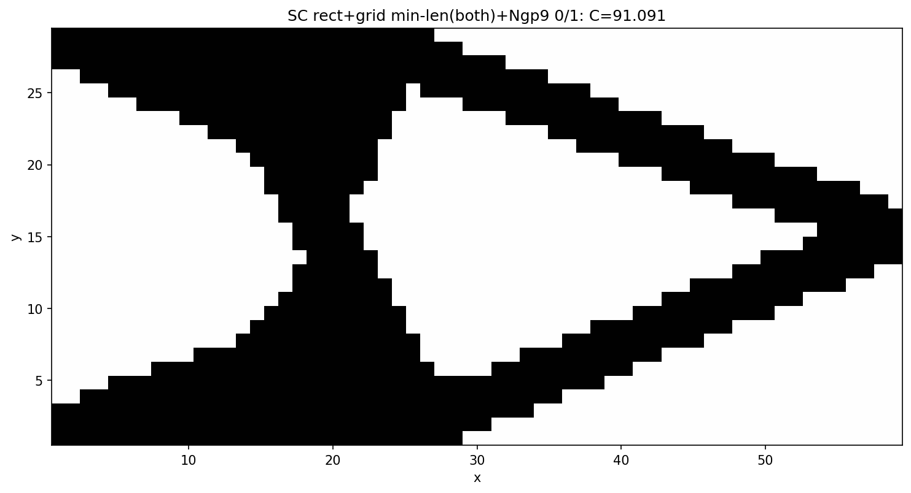
rect grid-fill, single start (C = 92.30) |
rect grid-fill + continuation (C = 73.18) |
|---|---|
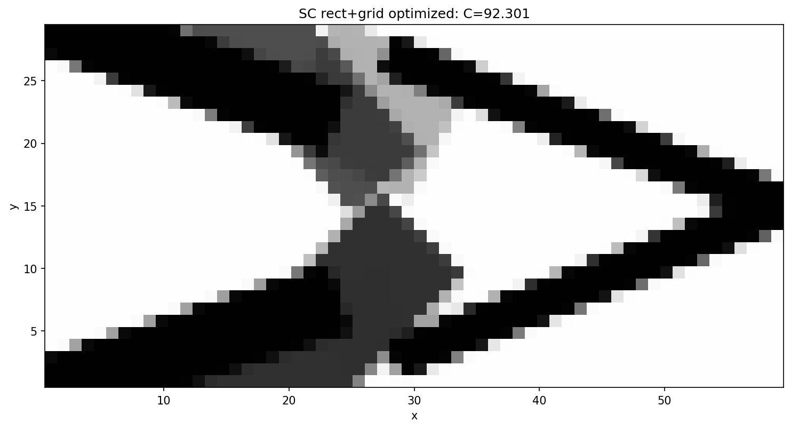 |
4.5 Global search on the rectangle / minimum-length config
Finally we run the full strategy exploration (§3) on this harder configuration —
rectangle primitives, grid-fill start, min_thickness = 3 bounds — each strategy using a
continuation + sharpening inner solve (benchmarks/sc2d_local_minima.py --preset short_cantilever_grid_minlen --sharpen). The constrained, thick-member design space is
much more rugged than the GP one, which makes the global search essential:
Method |
Best C |
vs single-start baseline |
|---|---|---|
baseline (single start) |
119.5 |
— |
deflated_search |
87.8 |
+26.6 % |
continuation (single start) |
89.0 |
+25.5 % |
basin_hopping |
83.6 |
+30.0 % |
multi_start |
78.0 |
+34.8 % |
tunneling |
77.2 |
+35.4 % |
chaotic_search |
76.5 |
+36.0 % |
Two clear messages. First, on this config a single start — even with continuation + sharpening — stalls at ~89; only the strategies that explore different layouts (multi-start, tunnelling, chaotic) escape to the good basin. Second, those exploring strategies agree: their best designs all land at C ≈ 76–78 and are the same thick-membered cantilever truss, reached from independent random / chaotic / tunnelled starts — the global search robustly converges to a similar, clean, near-0/1 design.
chaotic_search, C = 76.5 |
multi_start, C = 78.0 |
spread by strategy |
|---|---|---|
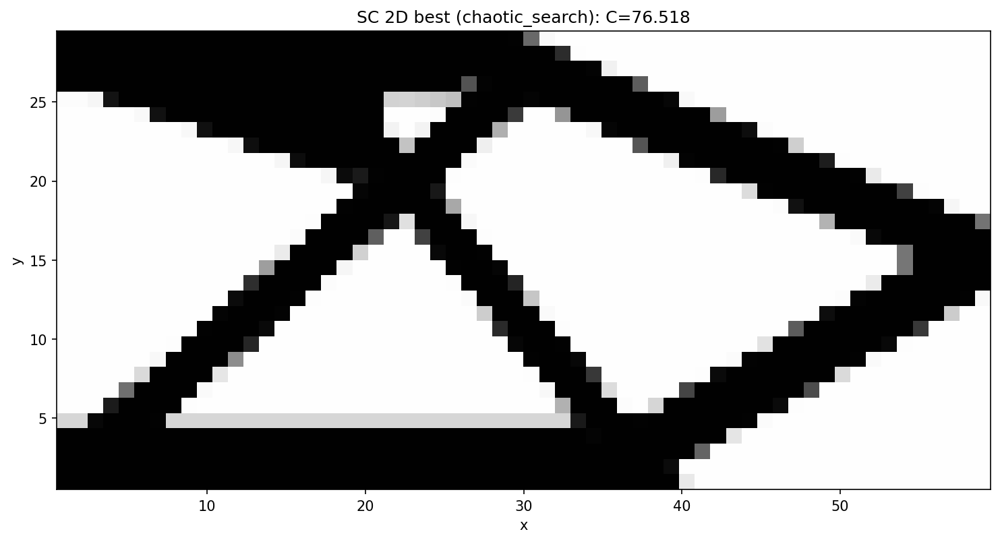 |
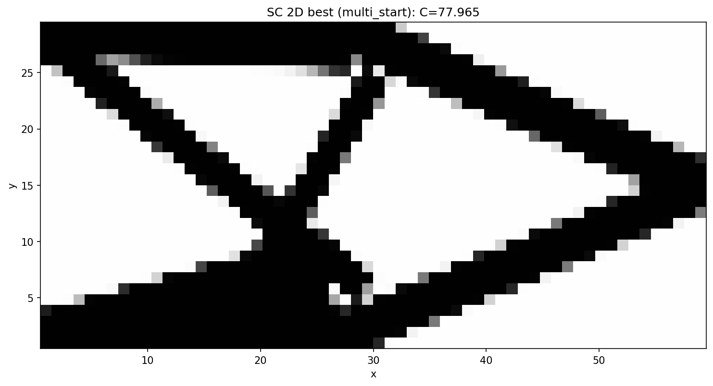 |
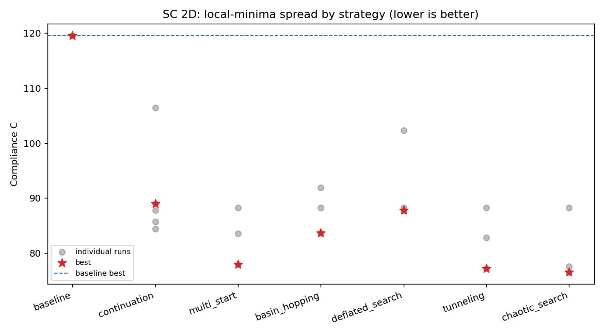 |
(Run with Ngp = 2 for exploration speed; the best design renders cleanly to 0/1 at
Ngp = 3 as in §4.4.)
Does more budget help? (3 → 10 restarts). Re-running with --budget 10 (ten
restarts / hops / solutions per strategy instead of ~3) is revealing: the best compliance
barely moves — multi-start 78.0 → 76.5, basin-hopping 83.6 → 76.1, chaotic 76.5 → 76.3
— because there is a strong, repeatable attractor at C ≈ 76. With ten chaotic restarts,
four independent ones land at 76.33 / 76.49 / 76.37 / 76.74 (the same design); multi-start
and basin-hopping hit it too. So extra budget does not find a lower optimum — it makes
the search reliably reach the ~76 basin (multiple independent hits ⇒ this is, to high
confidence, the near-global optimum for this constrained config), rather than occasionally.
The payoff of budget is robustness, not a better minimum; returns diminish sharply once
the basin is found. (Convergence-heavy methods — tunnelling, deflation — actually regressed
here because the 10× breadth was paid for by halving max_iter to 150; best-of-N methods
are immune to that, which is itself a useful robustness lesson.)
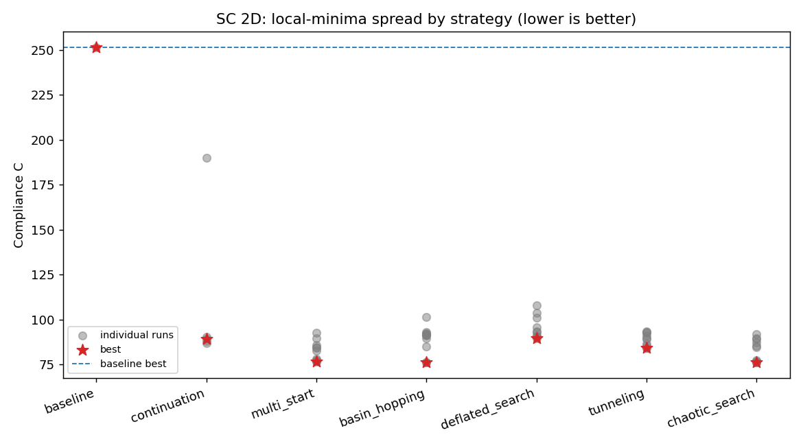
A single, smoother-started continuation matches the whole global search. The
single-start continuations above stalled at ~89 — but they started at r_gp = 2.0. A
single 5-step continuation that starts much smoother, r_gp = 3.0 → 1.8 → 1.1 → 0.6 → 0.3, reaches C = 76.08 (gray 0.09, vol 0.40) — i.e. the same near-global
optimum and the same design that ten restarts of multi-start / basin-hopping / chaotic
search found (76.0–76.5), at a fraction of the cost. The trajectory tells the story: at
r_gp = 3.0 the rectangles blur into a smooth blob that reorganises freely (C = 85,
gray 0.62), and each sharpening step settles it (73 → 74 → 75 → 76) into the good basin.
The lesson is sharp: the initial smoothness of the continuation is the decisive knob —
start smooth enough and a single trajectory anneals into the global basin (no exploration
needed); start too sharp (r_gp = 2.0) and even a perfect optimiser is trapped by the
grid start. This is exactly the chaotic-simulated-annealing picture of §2.6 (a high enough
initial “temperature”, annealed down) — and it is why continuation is the single most
effective technique in this study.
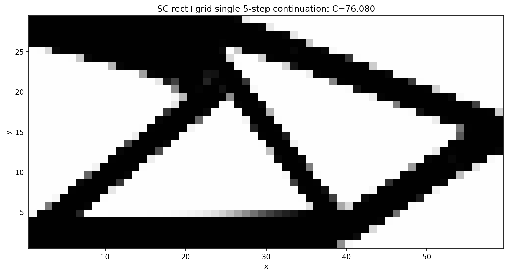
4.6 Is the asymmetric optimum really better? Enforcing symmetry
The best designs above (C ≈ 76) are visibly asymmetric about the horizontal mid-plane — which is suspicious, because the SC 2D problem is top–bottom symmetric (the load is central, the clamp is the full left edge). A natural hypothesis is that the asymmetric design is just a local minimum and that the true global optimum is a clean, symmetric X-truss. We tested this directly by enforcing symmetry and seeing whether it does better.
Symmetry is imposed exactly (not via a penalty) by a linear mirror-expander discipline.
The optimiser controls only the grid_nx × grid_ny = 9 components that tile the bottom half
of the domain (x_free, 54 design variables); a constant-Jacobian expander then appends their
mirror images about y = Ly/2. In normalized coordinates the mirror of a component
[x, y, l, h, θ, m] is [x, 1−y, l, h, 1−θ, m] (flip the vertical position and the orientation,
keep length/thickness/mass), giving 18 components total that are symmetric by construction
at every iteration. Preset: short_cantilever_grid_sym.yaml; the search reports a halved design
vector (_num_vars divides by two when symmetry: y).
The result is nuanced — and against the simple intuition:
Configuration |
Best C |
design |
|---|---|---|
symmetric, single 5-step continuation |
82.67 |
a poor local min (a thick central cross) |
symmetric, multi-start floor (best of 5) |
77.31 |
clean symmetric truss |
asymmetric, single 5-step continuation (§4.5) |
76.08 |
the global-search design |
Two things stand out. First, the single symmetric continuation (82.67) is not the symmetric optimum — it is itself a poor local minimum; a symmetric multi-start pulls the symmetric floor down to 77.31. So even within the symmetric subspace the problem is rugged and a single trajectory is not enough. Second, and more importantly, the symmetric floor (77.31) is still marginally worse than the asymmetric optimum (76.08) — by ~1.6 %. Enforcing the “obviously correct” symmetry did not find a better design; it found a slightly worse one.
Why would a symmetric problem prefer a (slightly) asymmetric optimum? Two effects. (i) Symmetry
halves the effective degrees of freedom — the optimiser has 9 free components instead of 18
to place — so the symmetric design is genuinely less expressive. (ii) The min_thickness = 3
bound makes a symmetric layout pay for a thick member crossing the mid-plane (where the two
mirror halves meet), which is structurally inefficient; the asymmetric design routes material
around that constraint. The 1.6 % gap is within the noise of this chaotic landscape (§2.6, where
a 1e-13 perturbation already moves compliance ~0.1 %), so the honest reading is that the
symmetric and asymmetric optima are essentially equivalent, with asymmetry buying a hair
more efficiency under the length-scale constraint.
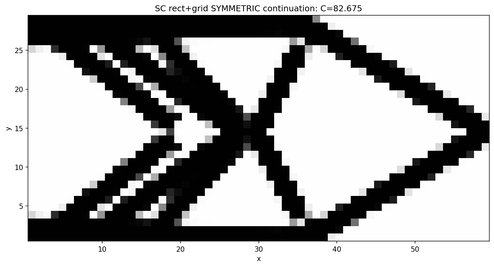
The practical lesson reinforces §4.5 and the chaotic-landscape framing: imposing a physically motivated symmetry is a reasonable regularizer (it shrinks the search space and guarantees a manufacturable, intuitive design), but it is not a free route to the global optimum, and in a problem this rugged it can cost a little. Cleaner insights (“the symmetric problem must have a symmetric optimum”) simply do not survive contact with the discretized, length-scale-constrained, chaotic reality — which is the recurring theme of this study.
4.7 Reformulating the design space: a node-based planar truss
Every technique up to here tries to reach a better minimum of a fixed parametrization —
the free bar layout of §4.1–4.6. We threw the whole arsenal at it (continuation, multi-start,
basin-hopping, deflation, tunnelling, chaotic search) and they all converged on the same
C ≈ 76 wall (§4.5). The last experiment asks a different question: what if we change the
parametrization itself?
Instead of parametrising each bar independently by its centre, length and angle
([Xc, Yc, L, θ, h, Mc]), we parametrise it by its two endpoints, and require bars to
share those endpoints — a truss. The design variables become the node (joint)
positions plus, per bar, a thickness h and mass density Mc (the topology knobs: a bar
vanishes when either hits its lower bound). This is the classic ground-structure idea, with
movable nodes. Implementation: Truss2DMapper (registered Truss) converts each bar’s
endpoints to the centre/length/angle the existing GGP kernels expect and chains the endpoint
Jacobian into the shared node columns (the is_continuous global-column convention);
build_ground_structure() lays a grid_nx × grid_ny node lattice and connects node pairs
within a tunable truss_radius (default ≈ 1 tile-diagonal = 8-neighbour stencil; larger →
denser, → the complete graph). Preset: short_cantilever_truss.yaml.
Planarize the ground structure. A raw radius graph has two modelling defects: bars that
cross without a joint there, and long bars that pass through an intermediate node without
connecting to it (both appear as soon as truss_radius exceeds the neighbour stencil — the
complete graph has 20 such pass-through bars on a 4×3 lattice). Both mean material overlapping
with no real connection, so a moving node decouples from a member it visually touches. We fix
this by making the structure a planar truss: a node is inserted at every bar-bar crossing
and the bars are split there, and any bar through an existing node is split at it. Each diagonal
X becomes a real 4-way joint. On the default 4×3 stencil this takes 12 → 18 nodes (one
crossing node per cell) and 29 → 41 bars, and yields zero pass-through / zero unjointed
crossings at any radius.
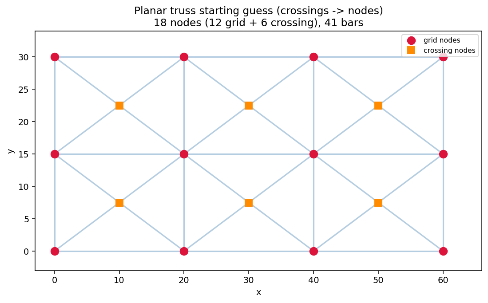
The payoff is the best result in this study:
Parametrization |
vars |
baseline (sharp start) |
+ 5-step continuation |
|---|---|---|---|
free bars (§4.5) |
108 |
— |
76.08 |
non-planar truss (12 nodes, 29 bars) |
82 |
91.2 |
79.3 |
planar truss (18 nodes, 41 bars) |
118 |
89.8 |
74.25 |
A single continuation trajectory on the planar truss reaches C = 74.25 — below the free-bar optimum (76.08) and below everything the full global search reached on the free bars (§4.5). The reasons are structural, not algorithmic:
Connectivity is free. In the free formulation, “is the structure connected?” is something the optimizer must discover, and is the source of most bad basins. In the truss it holds by construction (bars share joints), so that entire class of traps disappears.
Crossings are real joints. Planarizing removes the phantom-intersection degrees of freedom the optimizer would otherwise waste reconciling overlapping-but-unconnected members.
Fewer, better-conditioned variables. Every variable is a joint position or a member size with a clear structural role, rather than a free-floating bar parameter with many degenerate configurations.
Continuation still does the annealing (89.8 sharp → 74.25 smooth-started), exactly as in §4.5 — the initial smoothness remains the decisive knob.
planar truss + continuation, C = 74.25 |
optimized joints & bars |
|---|---|
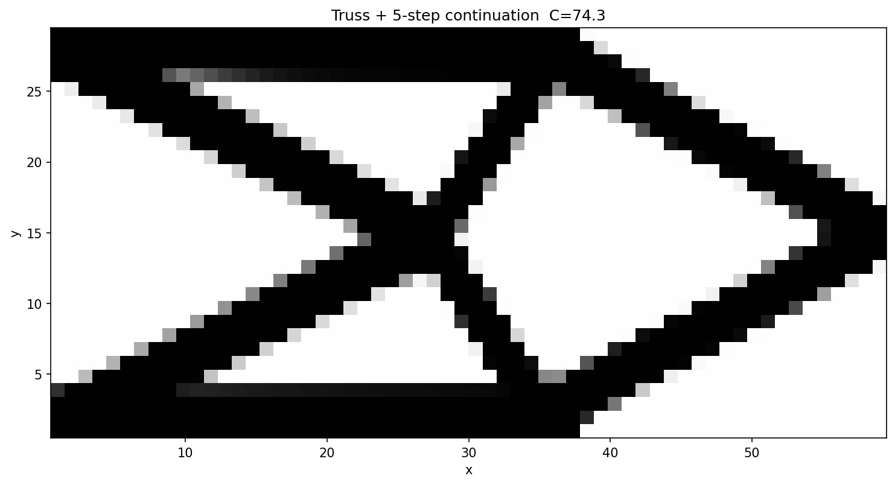 |
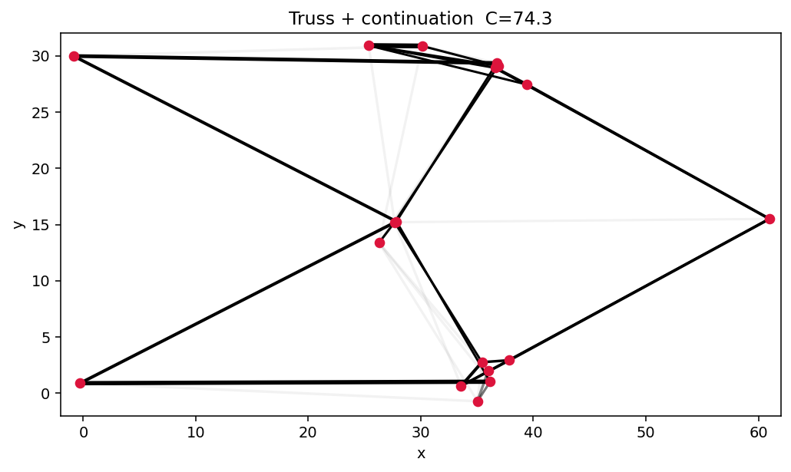 |
The lesson closes the study. After all the escape heuristics, the minimum that beat the wall came from reformulating the design space, not from a cleverer search of a fixed one. In a landscape this chaotic (§2.6), the highest-leverage move is to remove the ill-conditioned and degenerate degrees of freedom — connectivity, phantom crossings — so that an ordinary continuation can anneal cleanly into a good basin. Better conditioning beats harder searching.
5. Stress-constrained GGP: making the adaptive allowable converge
The capability wave that followed the local-minima study added stress constraints
(with displacement constraints and a configurable objective — any response among
compliance / volume / displacement / stress can now be minimized, maximized, or
bounded). This chapter documents the stress formulation, and — in the same honest
spirit as §4 — the string of instructive failures on the way to a converged
stress-active design, because the failures are where the transferable lessons live.
5.1 Formulation
Local von Mises constraints are handled with the unified aggregation-relaxation of
Verbart, Langelaar & van Keulen (2017), the method adopted in the Eulerian chapter of
the Coniglio thesis. The solid-material (unit-E) element stress is recovered from a
reference operator assembled once per mesh (σ̂_e = se_ref · u_e, exact for the
structured grid), and the reformulated, design-independent local constraint
g_e = ρ_e · ( σ̂vm_e / σ_allow − 1 ) ≤ 0
is aggregated with a lower-bound KS, G = (1/P)·ln( meanₑ exp(P·g_e) ) ≤ 0. One
parameter P controls both aggregation sharpness and relaxation; void elements are
trivially feasible, which is what makes singular optima accessible. All the nonlinear
algebra (stress recovery, von Mises, aggregation) is differentiated by JAX autodiff;
the implicit u-path is one adjoint solve reusing the physics discipline’s cached LU
factorization. Every gradient is finite-difference-gated at three levels: element
kernel, discipline (total adjoint dG/dρ), and the full composed chain
d(stress)/d(bar variables) through geometry → physics → stress.
Two wiring details matter more than they look:
The weight must be the mass density
ρ_V, not the penalized stiffness densityρ_E. Withρ_E ~ Mc^γc(γc = 3), a gray design cuts its stress weight cubically while its mass falls only linearly — mass minimization then parks in a feasible zero-stiffness gray haze (observed: 5.3 % mass atρ_E ≈ 10⁻⁴). With theρ_Vweight the haze is infeasible (σ̂ ~ 1/ρ³vs weightρ¹⇒g ~ 1/ρ²grows).Non-design (void) elements and the load-introduction vicinity must be masked out of the stress measure. Bars overlapping the L-bracket’s void quadrant keep
ρ ≈ 1in the raw geometry output against anEmindisplacement field — an enormous, fictitious “solid stress” that pressured the constraint (+25 % compliance in an early run) until masked. Conversely the mask must not be used under pure mass minimization, where the load-adjacent stress is exactly what anchors load-carrying.
5.2 Why an adaptive allowable (Le–Norato 2010)
The lower-bound aggregation satisfies G ≤ 0 while the true max stress slightly
exceeds σ_lim (our first converged L-bracket run: KS residual −0.07 but pointwise
overshoot), or — with a fixed loose allowable — ends over-conservative
(σ_max = 0.3·σ_lim). Le, Norato, Bruns, Ha & Tortorelli (2010) fix this with an
adaptive normalization: a correction factor (equivalently an adapted allowable)
updated between iterations from the measured true maximum, so the converged design
stops exactly at σ_max = σ_lim.
5.3 What failed, and why (seven benchmark-scale runs)
Every failure below happened with provably correct gradients (the FD gates above passed throughout); each was a dynamics or formulation-wiring effect:
# |
Configuration |
Failure |
Root cause → fix |
|---|---|---|---|
1 |
integrated allowable update |
|
the update was an integrator; Le’s |
2 |
point load in the measure, mass-min |
death-spiral: |
the load-element FE stress is singular; no finite allowable holds it → clamp + (for vol-constrained runs) load-region mask |
3 |
mass-min, thresholded |
collapse to void, “feasible” |
the load path faded through intermediate densities, invisible to a thresholded max → ρ-weighted max, no threshold |
4 |
mass-min, load region masked |
collapse: all stress hidden inside the excluded ball |
the load anchor is what enforces load-carrying → no exclusion under mass-min |
5 |
volume objective (×100 percent scale) |
MMA descends while infeasible |
gemseo-mma’s fixed constraint penalty had only ~10× authority → affine objective rescale to O(1) ( |
6 |
|
zero-stiffness gray haze at 5 % mass, “feasible” |
weight by mass density |
7 |
any per-iteration adaptive normalization (damped, state-free, lagged- |
MMA dismantles the design (vol 0.39→0.15, C 78→200+) even warm-started, tight-moved, |
the constraint value shifts 20–30 % between iterations; MMA’s asymptote heuristics cannot track an inconsistent constraint |
Failure 7 is the deep one: it persisted after everything else was verified — including a full-chain finite-difference check showing the composed sensitivities are correct and correctly signed (fattening a loaded bar reduces the constraint). The measurement was right; the game MMA was asked to play changed every iteration.
5.4 The recipe that converges
Three ingredients (matching established GGP practice):
Binary continuation first — converge the plain compliance/volume design (near-binary, load paths at
ρ ≈ 1) and warm-start from it (x0injection).Solid bars (
fix_mc: true) — pin every component’sMcto 1: stress must be relieved by geometry reshaping, never by density fade; gray survives only in the thin projection band.Outer-loop Le correction — each inner run solves the raw Verbart aggregate at a fixed allowable (smooth, monotone, iteration-consistent: MMA converges cleanly), and between runs
σ_allow ← σ_allow · (σ_lim / σ_max_true)^0.7
warm-started, until the true max von Mises is within 3 % of
σ_lim. Same fixed point as the per-iteration scheme (σ_max = σ_lim), stable dynamics.
On the L-bracket with σ_lim = 0.75 (genuinely active: the unconstrained optimum sits
at σ_max = 0.80), the loop converges in two outer iterations:
outer |
inner |
C |
vol |
true |
|---|---|---|---|---|
0 |
0.750 |
78.36 |
0.398 |
0.775 |
1 |
0.733 |
78.18 |
0.398 |
0.772 ✓ (within 3 % of 0.75) |
Feasible throughout, no dismantling, and essentially zero compliance cost relative to the unconstrained baseline (78.3) — the constraint reshaped the corner region rather than degrading the structure.
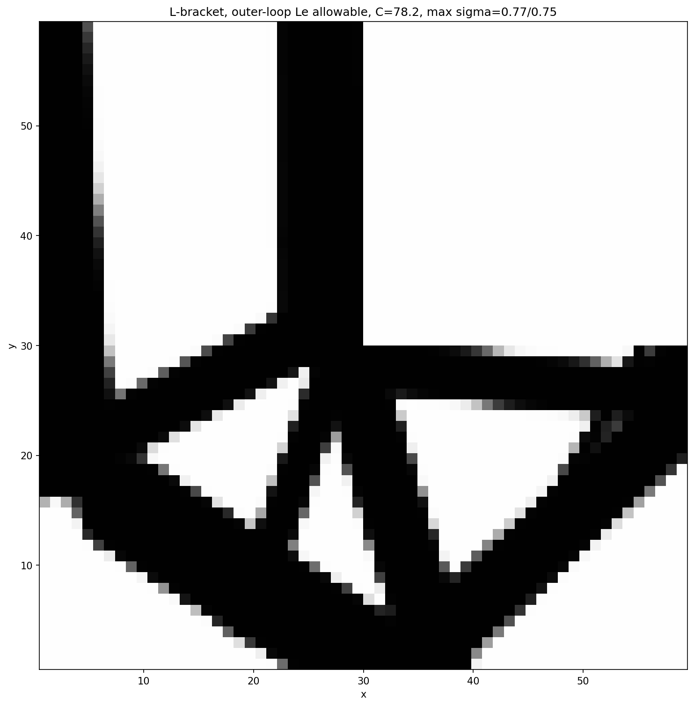
For reference, the volume-constrained runs at a slack limit behave as expected: at
σ_lim = 2.5 the constraint is correctly reported inactive (true margin −70 %) and the
design is volume-limited (C = 81.5); and the qualitative stress-relief signature — the
constrained design rounding/thickening material at the re-entrant corner versus the
baseline’s sharp crossing — is visible in the earlier comparison figures
(lshape_baseline.png vs lshape_stress_constrained.png).
5.5 Open items
Pure mass minimization should now transfer (raw inner constraint + outer-loop allowable, descending from the stress-converged design on the feasible side) but has not been run to convergence.
Aggressive targets (
σ_lim25 % below the natural max) require re-routing the load path away from the corner — beyond a 400-iteration / 0.005-move budget, a compute limit rather than a formulation one.The per-iteration adaptive scheme might be rescued by updating every N ≫ 1 iterations (interpolating toward the outer loop), or by GCMMA’s inner convexity control — untested.
6. Reproducing & extending
Run a single strategy:
ggp search --preset short_cantilever --strategy continuation.Add a new continuation schedule: pass a list of
overridesdicts toglobal_search.continuation.New strategies plug in the same way (construct
GGPPipeline(spec, x0=..., overrides=..., deflation=...), read backOptimisationResult); the orchestration is FEniCS-free and unit-tested intests/test_global_search.py.Run the node-based planar truss:
ggp optimize --preset short_cantilever_truss. Change the node lattice withgrid_nx/grid_nyand the ground-structure density withtruss_radiusin the preset; the connectivity (with crossing-node planarization) is built byggp.projection.truss_2d.build_ground_structureand unit-tested intests/test_truss_mapper.py.Stress/displacement constraints & configurable objective (§5): presets
short_cantilever_stress.yaml,short_cantilever_displacement.yaml,l_shape_stress.yaml,short_cantilever_minvol_stress.yaml; the converged stress-active recipe isbenchmarks/lshape_stress_outer.py. The objective is chosen viaobjective: {name: ..., sense: minimize|maximize, params: {...}}. The JAX sensitivity kernel lives inggp/utils/jax_sensitivity.py; FD gates intests/test_stress.pyandtests/test_adjoint_constraints.py.
References
M. P. Bendsøe, O. Sigmund. Topology Optimization: Theory, Methods, and Applications. Springer, 2003.
O. Sigmund, K. Maute. Topology optimization approaches. Struct. Multidiscip. Optim. 48(6):1031–1055, 2013.
J. K. Guest, J. H. Prévost, T. Belytschko. Achieving minimum length scale … using nodal design variables and projection functions. IJNME 61(2):238–254, 2004.
F. Wang, B. S. Lazarov, O. Sigmund. On projection methods, convergence and robust formulations in topology optimization. SMO 43(6):767–784, 2011.
X. Guo, W. Zhang, W. Zhong. Doing topology optimization explicitly and geometrically — a new moving morphable components based framework. J. Appl. Mech. 81(8), 2014.
W. Zhang, J. Yuan, J. Zhang, X. Guo. A new topology optimization approach based on Moving Morphable Components (MMC) and the ersatz material model. SMO 53:1243–1260, 2016.
S. Coniglio, J. Morlier, C. Gogu, R. Amargier. Generalized Geometry Projection: A unified approach for geometric feature based topology optimization. Arch. Comput. Methods Eng. 27:1573–1610, 2020.
D. P. Wales, J. P. K. Doye. Global optimization by basin-hopping … J. Phys. Chem. A 101(28):5111–5116, 1997.
I. P. A. Papadopoulos, P. E. Farrell, T. M. Surowiec. Computing multiple solutions of topology optimization problems. SIAM J. Sci. Comput. 43(3):A1555–A1582, 2021.
K. Svanberg. The method of moving asymptotes — a new method for structural optimization. IJNME 24(2):359–373, 1987.
A. V. Levy, A. Montalvo. The tunneling algorithm for the global minimization of functions. SIAM J. Sci. Stat. Comput. 6(1):15–29, 1985.
R. P. Ge. A filled function method for finding a global minimizer of a function of several variables. Math. Programming 46:191–204, 1990.
E. Ott, C. Grebogi, J. A. Yorke. Controlling chaos. Phys. Rev. Lett. 64(11):1196–1199, 1990.
K. Pyragas. Continuous control of chaos by self-controlling feedback. Phys. Lett. A 170(6):421–428, 1992.
L. Chen, K. Aihara. Chaotic simulated annealing by a neural network model with transient chaos. Neural Networks 8(6):915–930, 1995.
B. Li, W. Jiang. Optimizing complex functions by chaos search. Cybernetics and Systems 29(4):409–419, 1998.
A. Verbart, M. Langelaar, F. van Keulen. A unified aggregation and relaxation approach for stress-constrained topology optimization. SMO 55:663–679, 2017.
C. Le, J. Norato, T. Bruns, C. Ha, D. Tortorelli. Stress-based topology optimization for continua. SMO 41:605–620, 2010.
P. Duysinx, M. P. Bendsøe. Topology optimization of continuum structures with local stress constraints. IJNME 43(8):1453–1478, 1998.